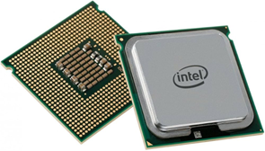

Procesor (CPU)
Opis: Procesor, czyli CPU, to „mózg” komputera odpowiedzialny za wykonywanie wszystkich obliczeń i operacji. Jego funkcją jest przetwarzanie danych i sterowanie pracą całego systemu. Najważniejsze cechy to liczba rdzeni, taktowanie (GHz) oraz pamięć cache. Procesor ma ogromny wpływ na szybkość działania programów i systemu. Przykładowe modele to Intel Core i5-13600K, AMD Ryzen 7 5800X czy Intel Core i9-14900K.
